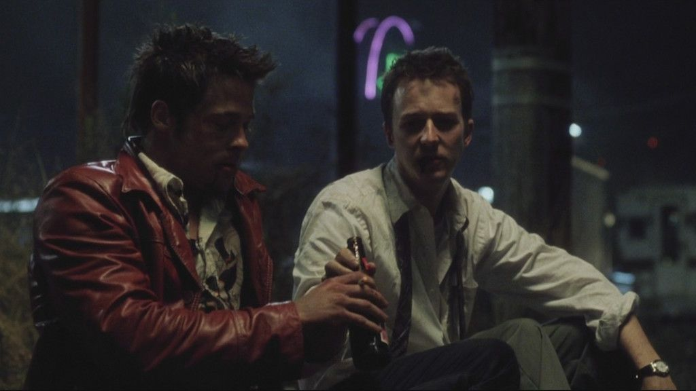
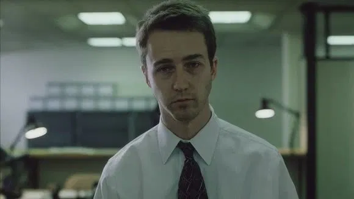
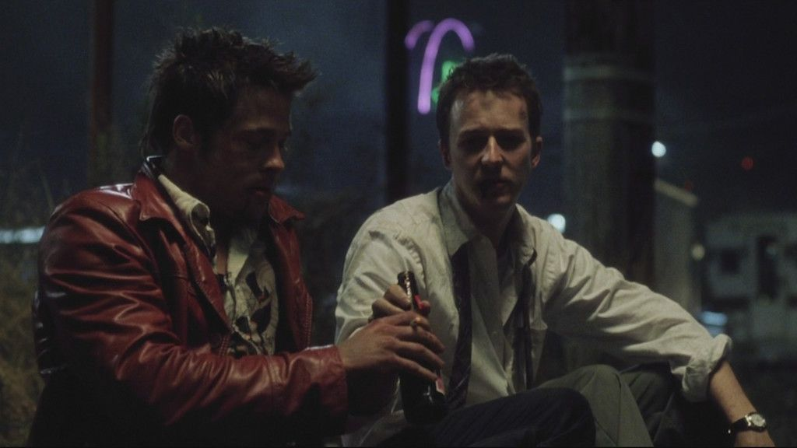
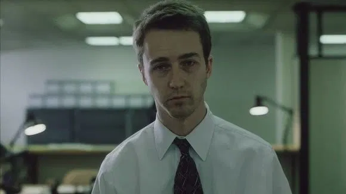

Sinopsis
El narrador (Edward Norton), cuyo nombre no conocemos durante la película, lleva una vida aburrida y monótona, que se vuelve aún más
triste cuando se vuelve adicto a los grupos de terapia para tratar de superar su insomnio, provocado por un cáncer.
Allí conoce a Marla (Helena Bonham Carter), una farsante a la que comienza a despreciar y con la que se enfrenta en más de una ocasión.
Viajando en avión conoce a Tyler Durden (Brad Pitt), un vendedor de jabón con una clara ideología: el perfeccionismo es para los débiles
y la destrucción de uno mismo es lo que, verdaderamente, vale la pena en la vida. A Jack le convence ese argumento y decide unirse a Tyler para pelear.
Primero sus combates son a las afueras de un bar, pero a medida que se vuelven populares y congregan a más gente deciden formar un “club de la lucha”.
En principio es secreto pero pronto se pondrá de moda, trayéndoles varios problemas.
 


